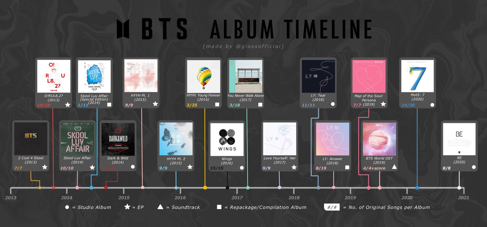
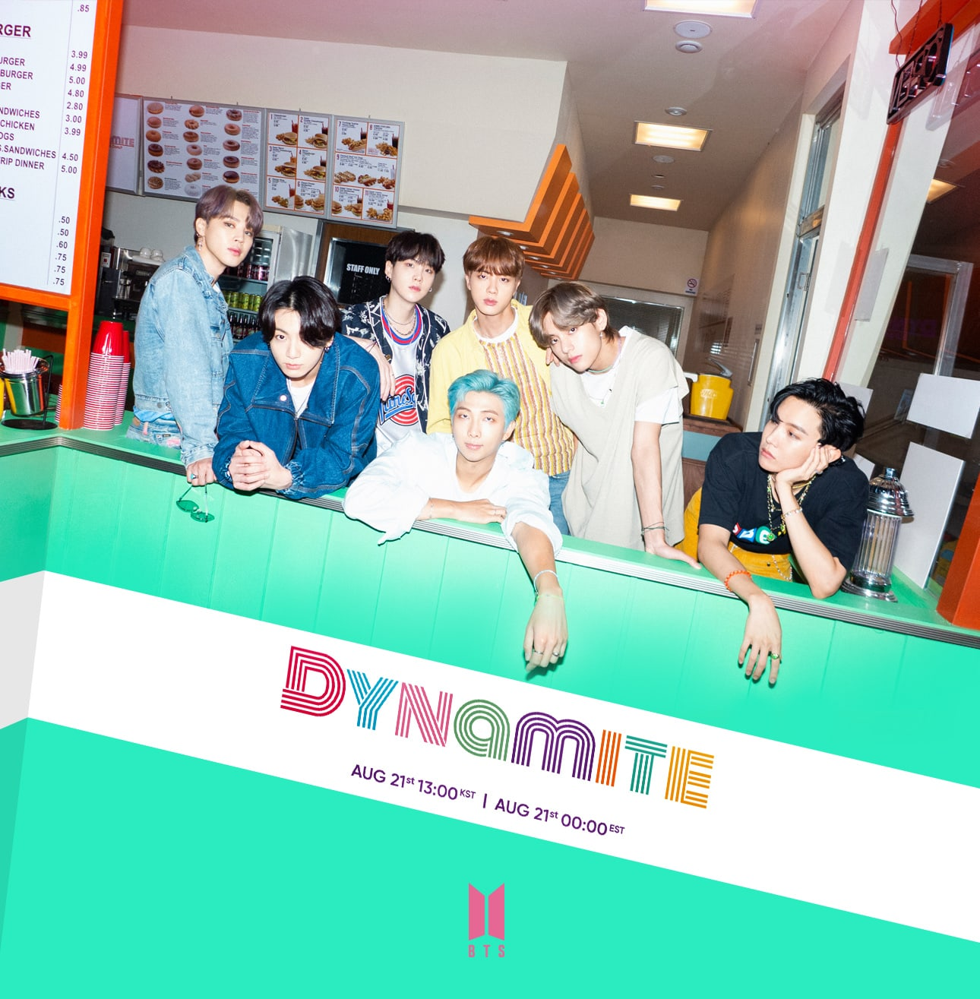
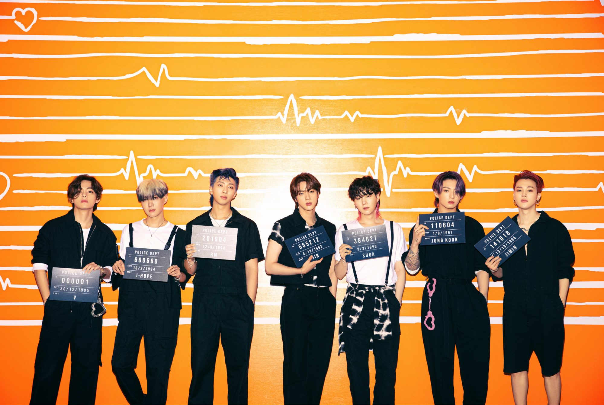
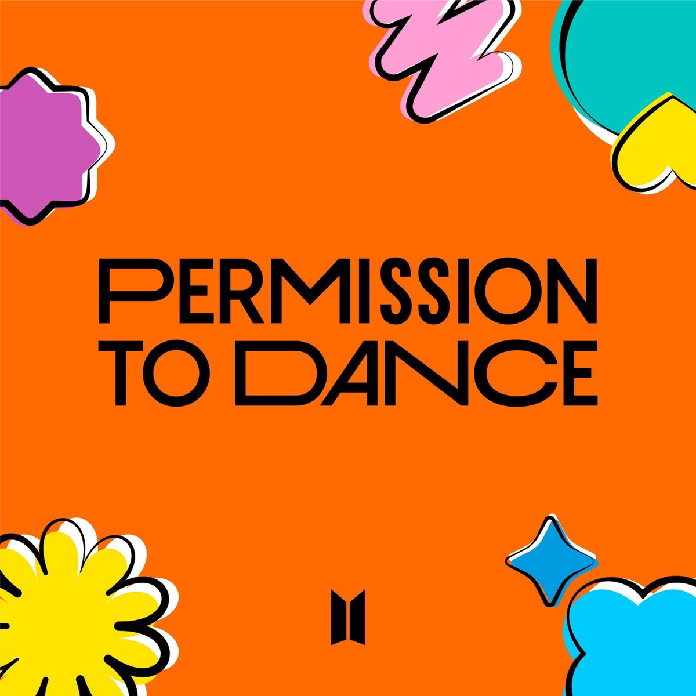
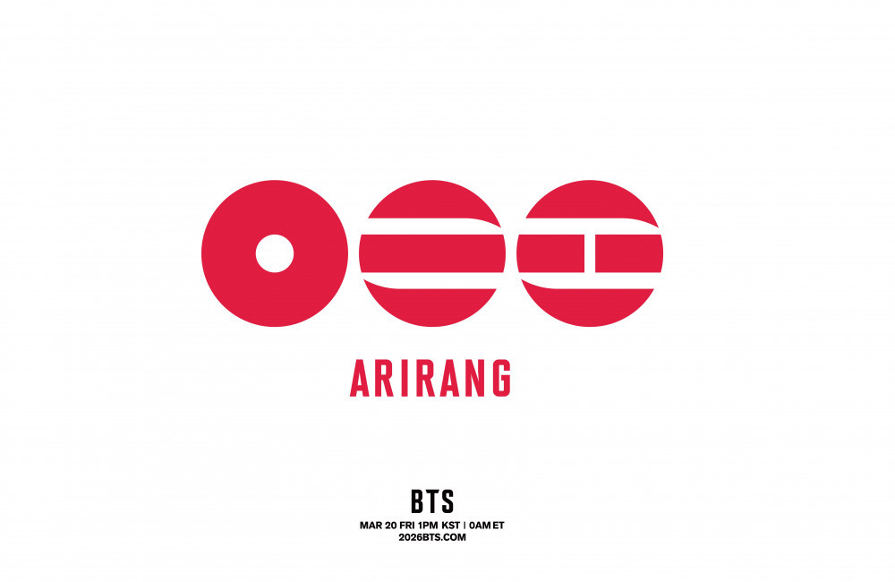

Discografía
La discografía de BTS reúne álbumes, EP, sencillos y recopilaciones que muestran la evolución musical del grupo desde su debut en 2013 hasta su etapa más reciente.

2013 — 2 Cool 4 Skool
Tipo: Single album
Fue el lanzamiento con el que BTS debutó oficialmente. Incluye “No More Dream”, canción que presentó el concepto juvenil de sus primeros años.
2013 — O!RUL8,2?
Tipo: EP
Continuó la propuesta de la primera etapa del grupo, abordando temas relacionados con la juventud, las expectativas y la presión social.
2014 — Skool Luv Affair
Tipo: EP
Exploró principalmente temas relacionados con el amor y las experiencias de la adolescencia. Incluye canciones como “Boy In Luv” y “Just One Day”.
2014 — Dark & Wild
Tipo: Álbum de estudio
Fue el primer álbum de estudio de BTS y presentó un sonido más desarrollado. Entre sus canciones se encuentran “Danger” y “War of Hormone”.
2015 — The Most Beautiful Moment in Life, Pt. 1
Tipo: EP
Inició una de las etapas más importantes de BTS. El álbum exploró diferentes emociones y experiencias relacionadas con la juventud. Su canción principal fue “I Need U”.
2015 — The Most Beautiful Moment in Life, Pt. 2
Tipo: EP
Continuó la historia iniciada en la primera parte y presentó canciones como “Run”, profundizando en temas relacionados con la juventud y sus dificultades.
2016 — The Most Beautiful Moment in Life: Young Forever
Tipo: Álbum recopilatorio
Cerró la serie The Most Beautiful Moment in Life, reuniendo canciones de las entregas anteriores junto con nuevo material.
2016 — Wings
Tipo: Álbum de estudio
Presentó una etapa más conceptual y artística. Incluye canciones como “Blood Sweat & Tears” y diferentes temas individuales de los integrantes.
2017 — You Never Walk Alone
Tipo: Álbum especial
Amplió el universo de Wings e incorporó nuevas canciones. Entre ellas se encuentra “Spring Day”, una de las canciones más reconocidas de BTS.
2017 — Love Yourself: Her
Tipo: EP
Inició la serie Love Yourself. Su canción principal fue “DNA”, que ayudó a incrementar la presencia internacional del grupo.
2018 — Love Yourself: Tear
Tipo: Álbum de estudio
Continuó la serie Love Yourself y presentó una faceta más emocional. Incluye “Fake Love” como canción principal.
2018 — Love Yourself: Answer
Tipo: Álbum recopilatorio
Cerró la serie Love Yourself, combinando canciones de los lanzamientos anteriores con nuevo material. Incluye “IDOL”.
2019 — Map of the Soul: Persona
Tipo: EP
Inició la serie Map of the Soul y exploró conceptos relacionados con la identidad y la personalidad. Su canción principal fue “Boy With Luv”, junto a Halsey.
2020 — Map of the Soul: 7
Tipo: Álbum de estudio
Continuó los conceptos de Map of the Soul y combinó nuevas canciones con algunas previamente publicadas. Incluye “Black Swan” y “ON”.
2020 — BE
Tipo: Álbum especial
Creado durante la pandemia de COVID-19, el álbum refleja sentimientos relacionados con la incertidumbre, la esperanza y la conexión. Incluye “Life Goes On”.
2020 — Dynamite
Tipo: Sencillo
“Dynamite” fue el primer sencillo completamente en inglés de BTS y se convirtió en uno de sus lanzamientos internacionales más destacados.

2021 — Butter
Tipo: Sencillo
“Butter” fue otro lanzamiento en inglés que presentó un sonido pop y una imagen diferente para el grupo.

2021 — Permission to Dance
Tipo: Sencillo
Canción en inglés que transmitió un mensaje relacionado con la esperanza, la libertad y disfrutar de la música sin importar las dificultades.

2022 — Proof
Tipo: Álbum de antología
Proof recopiló canciones representativas de diferentes etapas de BTS e incluyó material nuevo. Funcionó como una mirada a la trayectoria del grupo hasta ese momento.
2026 — ARIRANG
Tipo: Álbum de estudio
ARIRANG fue lanzado el 20 de marzo de 2026 y marcó una nueva etapa de BTS después del periodo de actividades individuales. El álbum representa el regreso de los siete integrantes como grupo y dio inicio a nuevas actividades musicales y presentaciones internacionales.

Canciones representativas
-
No More Dream — 2013
-
Boy In Luv — 2014
-
I Need U — 2015
-
Run — 2015
-
Blood Sweat & Tears — 2016
-
Spring Day — 2017
-
DNA — 2017
-
Fake Love — 2018
-
IDOL — 2018
-
Boy With Luv — 2019
-
Black Swan — 2020
-
ON — 2020
-
Dynamite — 2020
-
Butter — 2021
-
Permission to Dance — 2021
-
Life Goes On — 2020